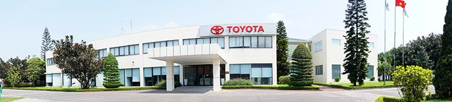
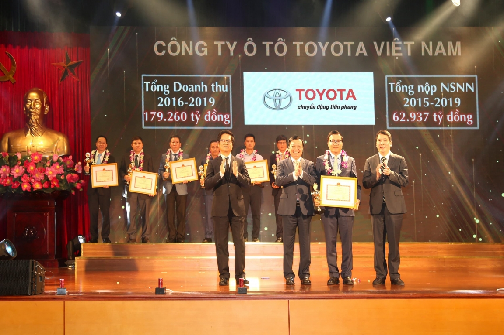

Công ty ô tô Toyota Việt Nam (TMV) được thành lập vào tháng 9 năm 1995, là liên doanh với số vốn đầu tư ban đầu là 89,6 triệu USD từ Tập đoàn Toyota Nhật Bản (70%), Tổng công ty Máy Động Lực và Máy Nông Nghiệp - VEAM (20%) và Công ty TNHH KUO Singapore (10%).
Là một trong những liên doanh ô tô có mặt đầu tiên tại thị trường Việt Nam, TMV luôn nỗ lực phát triển bền vững cùng Việt Nam. TMV đã, đang và sẽ không ngừng cung cấp những sản phẩm có chất lượng cao và dịch vụ sau bán hàng hoàn hảo nhằm mang đến sự hài lòng cao nhất cho khách hàng, cũng như đóng góp tích cực cho sự phát triển của ngành công nghiệp ô tô và đất nước Việt Nam.
Kể từ khi thành lập đến nay, TMV đã không ngừng lớn mạnh và liên tục phát triển không chỉ về quy mô sản xuất, mà cả doanh số bán hàng. Hiện tại, TMV luôn giữ vị trí dẫn đầu trên thị trường ô tô Việt Nam với sản lượng nhà máy của công ty đạt trên 70.000 xe/năm (theo 2 ca làm việc). Doanh số bán cộng dồn của TMV đạt trên 695.424 chiếc, và các sản phẩm đều chiếm thị phần lớn trên thị trường. Từ 11 nhân viên trong ngày đầu thành lập, tới nay số lượng cán bộ công nhân viên của công ty đã lên tới hơn 1.900 người và hơn 8.800 nhân viên làm việc tại hệ thống 72 đại lý/chi nhánh đại lý và Trạm dịch vụ ủy quyền Toyota phủ rộng khắp trên cả nước.

Bên cạnh các hoạt động sản xuất kinh doanh, TMV luôn nỗ lực đóng góp tích cực cho Ngân sách Nhà nước qua việc hoàn thành tốt công tác nộp thuế, cũng như góp phần thúc đẩy sự phát triển bền vững của cộng đồng và xã hội Việt Nam với nhiều hoạt động dài hơi, thiết thực và có ý nghĩa.
Trong suốt lịch sử hình thành và phát triển, với sự nỗ lực không ngừng của toàn bộ nhân viên TMV, đại lý, nhà cung cấp và đối tác, TMV đã đạt được nhiều thành tựu to lớn & liên tục phát triển lớn mạnh, hoàn thành sứ mệnh đối với khách hàng, đóng góp đáng kể cho nghành công nghiệp ô tô và xã hội Việt Nam. Với những thành tích đạt được, TMV đã vinh dự được Chính phủ Việt Nam trao tặng Huân chương lao động hạng nhì và được coi là một trong những doanh nghiệp có vốn đầu tư nước ngoài hoạt động thành công nhất tại Việt Nam.
Ban lãnh đạo
Tổng giám đốc: Ông Hiroyuki Ueda
Phó Tổng giám đốc: Ông Phạm Thanh Tùng
Lĩnh vực hoạt động chính
- Lắp ráp, sản xuất xe ô tô các loại và phụ tùng ô tô.
- Cung cấp dịch vụ bảo hành và sửa chữa xe ô tô.
- Đặt hàng gia công và mua từ các nhà cung cấp Việt Nam, bao gồm cả các doanh nghiệp chế xuất, các loại phụ tùng ô tô để gia - công, đóng gói và xuất khẩu.
- Thực hiện quyền nhập khẩu xe ô tô
- Nhập khẩu phụ tùng ô tô và các trang thiết bị, máy móc chuyên dụng theo tiêu chuẩn Toyota.
- Tư vấn, đào tạo, hỗ trợ nội bộ việc thực hiện và phát triển kinh doanh, dịch vụ và bảo dưỡng sản phẩm Toyota cho các công ty trong Tập đoàn Toyota, đại lý, ứng viên đại lý và các trạm dịch vụ được ủy quyền của Toyota.
| Năm | Sự kiện |
|---|---|
| 1995 |
Nhận được giấy phép đầu tư và thành lập công ty. |
| 1996 |
Động thổ và xây dựng nhà máy Toyota Việt Nam. Xuất xưởng và giới thiệu sản phẩm đầu tiên (HIACE) ra thị trường ô tô Việt Nam. |
| 1997 |
Khai trương Trung tâm Đào tạo tại trụ sở chính. Khai trương Chi nhánh TP. Hồ Chí Minh Khai trương Tổng kho Phụ tùng tại trụ sở chính. Giới thiệu mẫu xe COROLLA thế hệ đầu tại thị trường ô tô Việt Nam. |
| 1998 |
Khai trương Chi nhánh Hà Nội. Giới thiệu mẫu xe CAMRY thế hệ đầu tiên đáp ứng mong mỏi của khách hàng. |
| 1999 |
Là nhà sản xuất ô tô đầu tiên nhận chứng chỉ ISO14001 về Hệ thống Quản lý Môi trường. Giới thiệu mẫu xe ZACE, mở ra xu hướng xe đa dụng trên thị trường ô tô Việt Nam. |
| 2000 |
Mở rộng và nâng cấp Trung tâm Đào tạo tại trụ sở chính. Chính thức phân phối mẫu xe LAND CRUISER dưới dạng nhập khẩu nguyên chiếc. |
| 2001 |
Giới thiệu chiếc xe COROLLA ALTIS. |
| 2002 |
Triển lãm ô tô Việt Nam 2002. Cuộc chạy đua hướng đến huy chương vàng. |
| 2003 |
Khai trương xưởng Dập chi tiết thân vỏ xe, đóng góp tích cực cho việc gia tăng tỷ lệ nội địa hóa. Giới thiệu mẫu xe VIOS thế hệ đầu tiên. |
| 2004 |
Khai trương Trung tâm Xuất Khẩu Phụ Tùng Toyota. Giới thiệu dịch vụ Bảo dưỡng nhanh lần đầu tiên tại Việt Nam. |
| 2005 |
Kỷ niệm 10 năm thành lập công ty và thành lập Quỹ Toyota Việt Nam (TVF). Xuất xưởng chiếc xe thứ 50.000. |
| 2006 |
Giới thiệu mẫu xe INNOVA, một trong những mẫu xe làm nên thành công vang dội của TMV. |
| 2007 |
Giới thiệu dịch vụ Sửa chữa nhanh Thân xe và Sơn lần đầu tiên tại Việt Nam. |
| 2008 |
Khai trương Xưởng sản xuất khung gầm xe, giúp nâng cao tỉ lệ nội địa hóa sản phẩm. Giới thiệu dịch vụ Sửa chữa Vết xước trong 4h lần đầu tiên tại Việt Nam. Đạt doanh số bán cộng dồn 100.000 xe. Chính thức phân phối mẫu xe bán tải Hilux dưới dạng nhập khẩu nguyên chiếc. |
| 2009 |
Khai trương Trung tâm Toyota miền Nam, nơi trung chuyển phụ tùng và giao xe cho khu vực phía Nam. Giới thiệu mẫu xe Fortuner chiếm lĩnh thị trường xe thể thao đa dụng và trở thành mẫu xe có doanh số bán trung bình cao nhất của TMV. |
| 2010 |
Khai trương Trung tâm Xe đã qua sử dụng đầu tiên tại Việt Nam |
| 2011 |
Đạt doanh số bán cộng dồn 200.000 xe. Chính thức phân phối mẫu xe YARIS & LAND CRUISER PRADO dưới dạng nhập khẩu nguyên chiếc. |
| 2013 |
Đạt doanh số bán hàng kỷ lục với 33.288 xe & giá trị xuất khẩu kỷ lục với 39,2 triệu đô la Mỹ. Xuất xưởng chiếc xe thứ 250.000 tại nhà máy. Chính thức ra mắt thương hiệu Lexus tại Việt Nam với những sản phẩm và dịch vụ đẳng cấp. |
| 2014 |
Doanh số bán đạt kỷ lục mới với 41.205 chiếc, kim ngạch xuất khẩu cũng đạt kỷ lục với 40 triệu Đô la Mỹ. Kỷ lục mới trong hoạt động dịch vụ với 590,000 lượt xe vào làm dịch vụ. Ra mắt các mẫu xe thế hệ đột phá mới và cả 5 mẫu xe Toyota được sản xuất tại Việt Nam đều nằm trong TOP 10 xe bán chạy nhất thị trường 2014. |
| 2015 |
Xuất xưởng chiếc xe thứ 300.000 tại nhà máy. Kỷ niệm 20 năm thành lập. Doanh số bán đạt kỷ lục mới với 50.285 xe. |
| 2016 |
Doanh số bán đạt kỷ lục mới với 57,036 xe. Xuất xưởng chiếc xe thứ 350.000 tại nhà máy. |
| 2017 |
Xuất xưởng chiếc xe thứ 400.000 Giới thiệu dự án No Quality. No Life (Chất lượng làm nên tất cả). |
| 2018 |
Tổng doanh số bán tích lũy đạt 518.742 xe. Ra mắt 3 mẫu xe hoàn toàn mới là Wigo, Avanza và Rush. |
| 2019 |
Xuất xưởng chiếc xe thứ 500.000. |
| 2020 |
695.424 xe được bán ra thị trường. Xuất xưởng chiếc xe thứ 574.092 tại nhà máy. |
| Năm | Giải thưởng |
|---|---|
| 1999 |
Là nhà sản xuất ô tô đầu tiên tại Việt Nam được nhận Chứng chỉ ISO 14001 về thiết lập & áp dụng hệ thống quản lý môi trường. Bằng khen về đóng góp xây dựng phát triển công tác và hỗ trợ hoạt động văn hóa xã hội ở Việt Nam từ năm 1996 đến năm 1999. |
| 2000 |
Bằng khen vì đã có thành tích và đóng góp tích cực cho ngành công nghiệp ô tô và sự phát triển kinh tế văn hóa xã hội Việt Nam trong 5 năm hoạt động - Thủ tướng chính phủ khen tặng. Bằng khen vì đã có nhiều đóng góp tích cực cho sự nghiệp văn hóa của Việt Nam - Bộ văn hóa thông tin khen tặng. |
| 2001 |
Giải thưởng Rồng Vàng năm 2000 về sản phẩm được ưu chuộng nhất do người tiêu dùng bình chọn - Thời báo kinh tế Việt Nam khen tặng. |
| 2002 |
Bằng khen về thành tích trong thực hiện Luật Hải Quan từ năm 2000 đến 2002 - Thủ tướng chính phủ khen tặng. Giải thưởng Rồng Vàng năm 2001 về sản phẩm được ưu chuộng nhất do người tiêu dùng bình chọn - Thời báo kinh tế Việt Nam khen tặng. |
| 2003 |
Giải thưởng Rồng Vàng năm 2002 về sản phẩm được ưu chuộng nhất do người tiêu dùng bình chọn - Thời báo kinh tế Việt Nam khen tặng. |
| 2004 |
Giải thưởng Rồng Vàng năm 2003 về sản phẩm được ưu chuộng nhất do người tiêu dùng bình chọn - Thời báo kinh tế Việt Nam khen tặng. |
| 2005 |
Huân chương Lao động hạng 3 - Chủ tịch nước CHXHCN Việt Nam khen tặng. Giải thưởng "Doanh nghiệp có thành tích xuất khẩu xuất sắc 2004" - Bộ thương mại khen tặng. Huy chương "Vì sự nghiệp phát triển nghành công nghiệp ô tô". Giải thưởng Rồng Vàng năm 2004 về sản phẩm được ưu chuộng nhất do người tiêu dùng bình chọn - Thời báo kinh tế Việt Nam khen tặng. |
| 2006 |
Giải thưởng "Doanh nghiệp xuất khẩu xuất sắc 2005" - Ủy ban quốc gia về Hợp tác kinh tế quốc tế phối hợp với 53 Thương vụ Việt Nam tại nước ngoài khen tặng. Giải thưởng Rồng Vàng năm 2005 về sản phẩm được ưu chuộng nhất do người tiêu dùng bình chọn - Thời báo kinh tế Việt Nam khen tặng. |
| 2007 |
Bằng khen vì đã có thành tích xuất sắc trong sản xuất kinh doanh năm 2007 - Chủ tịch Ủy ban Nhân tỉnh Vĩnh Phúc khen tặng. Bằng khen "Vì sự nghiệp giáo dục" lần I - Bộ Giáo dục & Đào tạo khen tặng. Giải thưởng "Doanh nghiệp có thành tích xuất khẩu xuất sắc 2006" - Bộ Thương mại khen tặng. Giải thưởng Rồng Vàng năm 2006 về sản phẩm được ưu chuộng nhất do người tiêu dùng bình chọn - Thời báo kinh tế Việt Nam khen tặng. |
| 2008 |
Giải thưởng "Hàng Việt Nam chất lượng cao" - Báo Sài Gòn Tiếp thị khen tặng. Giải thưởng "Doanh nghiệp xuất khẩu uy tín năm 2007" - Bộ công thương khen tặng. Giải thưởng "Vì sự nghiệp môi trường" - Hội Tri thức KH&CN trẻ VN và Trung tâm TV&PV Tài năng VN khen tặng. Bằng khen của vì những đóng góp tích cực cho sự phát triển dòng âm nhạc cổ điển, thính phòng tại Việt Nam - Bộ trưởng Bộ Văn Hoá, Thể thao và Du lịch khen tặng. Giải thưởng "Chất lượng toàn cầu cho xe xuất xưởng năm 2007" - Tập đoàn ô tô Toyota Nhật Bản khen tặng. |
| 2009 |
Giải thưởng Rồng Vàng cho "Thương hiệu được yêu thích nhất 2008" - Thời báo Kinh tế Việt Nam khen tặng. Bằng khen vì những đóng góp trong công tác tuyên truyền bảo vệ Môi trường - Tổng cục Môi trường khen tặng. Giải thưởng "Việt Nam Golden FDI 2009" "Doanh nghiệp FDI về phát triển nguồn nhân lực" - Bộ trưởng Bộ Kế hoạch & Đầu tư khen tặng. Giải thưởng "Doanh nghiệp xuất khẩu uy tín năm 2008" - Bộ Công thương khen tặng. Giải thưởng "Chất lượng toàn cầu cho xe xuất xưởng năm 2008" - Tập đoàn ô tô Toyota Nhật Bản khen tặng. |
| 2010 |
Giữ vị trí số 1 về chỉ số hài lòng của khách hàng trong lĩnh vực dịch vụ sau bán hàng - J.D. Power Asia Pacific khen tặng. Bằng khen vì đã có thành tích xuất sắc trong việc thực hiện nghĩa vụ nộp thuế 2010 - Ủy ban Nhân dân tỉnh Vĩnh Phúc khen tặng. Bằng khen "Vì sự nghiệp giáo dục" lần II - Bộ Giáo dục & Đào tạo khen tặng. Bằng khen về các thành tích xuất sắc trong công tác bảo vệ môi trường năm 2010 - Bộ Tài nguyên Môi trường khen tặng. Giải thưởng Rồng Vàng cho "Sản phẩm chất lượng cao năm 2009" - Thời báo Kinh tế Việt Nam khen tặng. |
| 2011 |
Bằng khen "Vì sự nghiệp giáo dục" lần III - Bộ Giáo dục & Đào tạo khen tặng. Bằng khen vì những đóng góp tích cực trong công tác giáo dục ATGT - Ủy ban ATGT Quốc Gia khen tặng. Bằng khen & Cờ thi đua xuất sắc vì đã có thành tích xuất sắc trong sản xuất kinh doanh năm 2012 - Ủy ban Nhân dân tỉnh Vĩnh Phúc khen tặng. Chứng nhận "Hãng xe có dịch vụ sau bán hàng tốt nhất Việt Nam năm 2010" - Diễn đàn kinh tế Việt Nam khen tặng. Giải thưởng "Doanh nghiệp có thành tích xuất khẩu xuất sắc năm 2010" - Bộ Công thương khen tặng. Giải thưởng Rồng Vàng cho "Sản phẩm chất lượng cao năm 2010" - Thời báo Kinh tế Việt Nam khen tặng. |
| 2012 |
Giải thưởng "Hàng Việt Nam chất lượng cao" - Báo Sài gòn Tiếp thị khen tặng. Giải thưởng Rồng Vàng năm 2011 cho "Thương hiệu được yêu thích nhất" - Thời báo Kinh tế Việt Nam khen tặng. Giữ vị trí số 1 về chỉ số hài lòng của khách hàng trong lĩnh vực dịch vụ sau bán hàng - J.D. Power Asia Pacific khen tặng. |
| 2013 |
Giải thưởng "Nhà máy tốt nhất khu vực châu Á" - Toyota châu Á Thái Bình Dương khen tặng. Cờ "Đơn vị xuất sắc trong phong trào thi đua năm 2013" - Bộ Công thương khen tặng. Doanh nghiệp xuất khẩu uy tín 2012 - Bộ Công thương khen tặng. Bằng khen vì Đã có thành tích hoàn thành tốt nghĩa vụ nộp thuế vào ngân sách nhà nước năm 2013 - Cục Hải quan Hà Nội khen tặng. Bằng khen - Bộ Văn hóa, Thể thao & Du lịch khen tặng. Giải thưởng "Hàng Việt Nam chất lượng cao năm 2012" - Báo Sài Gòn Tiếp Thị khen tặng. |
| 2014 |
Giải thưởng Rồng Vàng năm 2013 cho "Thương hiệu được yêu thích nhất" - Thời báo Kinh tế Việt Nam khen tặng. Doanh nghiệp xuất khẩu uy tín năm 2013 - Bộ Công thương khen tặng. Bằng khen vì hoàn thành nghĩa vụ đóng thuế năm 2013 - Ủy ban Nhân dân TP.HCM khen tặng. Chứng nhận là một trong "100 doanh nghiệp có môi trường làm việc tốt nhất Việt Nam" - Công ty Anphabe và Nielsen khen tặng. Vị trí số 1 về chỉ số hài lòng khách hàng trong lĩnh vực dịch vụ CSI. |
| 2015 |
Giải thưởng Rồng Vàng cho "Thương hiệu được yêu thích nhất". Giải thưởng "Doanh nghiệp thực hiện tốt an sinh xã hội và phát triển cộng đồng". Giải thưởng "Doanh nghiệp mạnh và phát triển bền vững". Giải thưởng "Đổi mới công nghệ hướng tới phát triển kinh tế xanh". Nhận Huân chương Lao động Hạng Nhì (do chủ tịch nước trao tặng). |
| 2016 |
Giải thưởng Rồng Vàng cho "Thương hiệu được yêu thích nhất". Bằng khen của tỉnh Vĩnh Phúc cho tập thể tiêu biểu có thành tích xuất sắc trong giai đoạn 1997 - 2016. |
| 2017 |
Giữ vị trí số 1 về chỉ số hài lòng khách hàng trong lĩnh vực bán hàng và dịch vụ hậu mãi. Xếp thứ hạng cao trong Top 500 Doanh nghiệp lớn nhất Việt Nam năm 2017 (Vietnam Report). |
| 2018 |
Bằng khen của Thủ tướng Chính Phủ vì thành tích trong hoạt động đầu tư nước ngoài tại Việt Nam trong 30 năm. Giữ vị trí số 1 về chỉ số hài lòng khách hàng trong lĩnh vực dịch vụ hậu mãi. |
| 2019 |
Doanh nghiệp dẫn đầu Phong trào thi đua trao tặng bởi UBND tỉnh Vĩnh Phúc. Doanh nghiệp tiêu biểu trong định hướng phát triển Vùng kinh tế trọng điểm Bắc Bộ trao tặng bởi Phòng Thương mại & Công nghiệp Việt Nam. |
| 2020 |
"Giải thưởng xuất sắc" dành cho thương hiệu có số lượng mẫu xe đạt tiêu chuẩn 5 sao nhiều nhất tại ASEAN NCAP GRAND PRIX lần thứ 4. Toyota được vinh danh tại "Lễ tôn vinh người nộp thuế tiêu biểu" do Tổng cục Thuế tổ chức. |
Sản xuất và lắp rắp xe Toyota tại Việt Nam: COROLLA ALTIS, VIOS, INNOVA và FORTUNER


Kinh doanh xe Toyota nhập khẩu: FORTUNER, RUSH, AVANZA, WIGO, YARIS, CAMRY, LAND CRUISER, HILUX, LAND CRUISER PRADO, HIACE
LAND CRUISER
HILUX
YARIS
LAND CRUISER PRADO
HIACE
ALPHARD
AVANZA
RUSH

CAMRY
WIGO
FORTUNER

COROLLA CROSS
Kinh doanh xe Lexus nhập khẩu: LS 460L, GS 350, ES 350, LX 570, RX 350, GX 460 và NX 200t